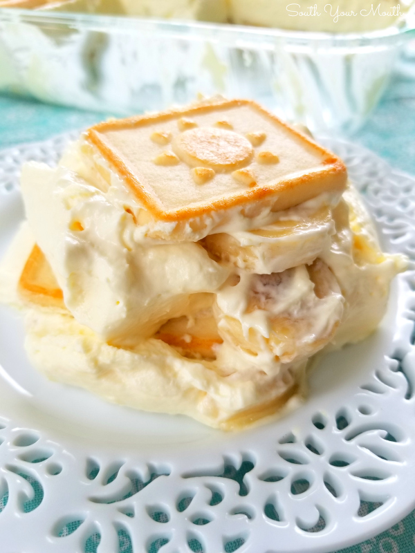

Banana Pudding

Description
This creamy, rich banana pudding made with Chessman cookies is a delicious,
no-bake dessert! Perfect for weeknights or potlucks, everyone will LOVE
this classic recipe! This recipe is the best since it's no bake, so it sets up in 4 hrs,
firm enough to slice and serve. It also looks great in a trifle bowl, which will
show the layers.
Ingredients
- Bananas - start with fresh, ripened bananas. Preferably ones that are still firm,
as the bananas will soften even more as this sits in the refrigerator.
- Cookies - Pepperidge Farm Chessmen Cookies are delicious shortbread cookies
and make a great layering cookie. If you cant find them, butter cookies or vanilla
Wafers will work too.
- Pudding - You can use banana cream instant pudding mix or plain vanilla.
Be sure to use instant pudding for best results.
- Cool Whip
Step by Step Instructions
- Bottom Layer - Line the bottom of a 13×9-inch baking dish with a single layer of
cookies (it’s okay if they overlap slightly). Use the deepest 13×9 you own. Layer sliced
bananas over the top. I used 6 medium size bananas, and they covered the bottom so you
couldn’t see any cookies (about 2 layers worth of banana slices).
- Pudding Filling - In a mixing bowl, combine cream cheese with sweetened condensed milk.
Beat until creamy, with no clumps! Add in pudding mixture, and milk, and beat again for
several minutes, scraping down the sides of the bowl as needed. Fold in the cool whip or
whipped cream.
- Final Layer - Pour pudding mixture over the top of the bananas and top with a layer of
cookies.